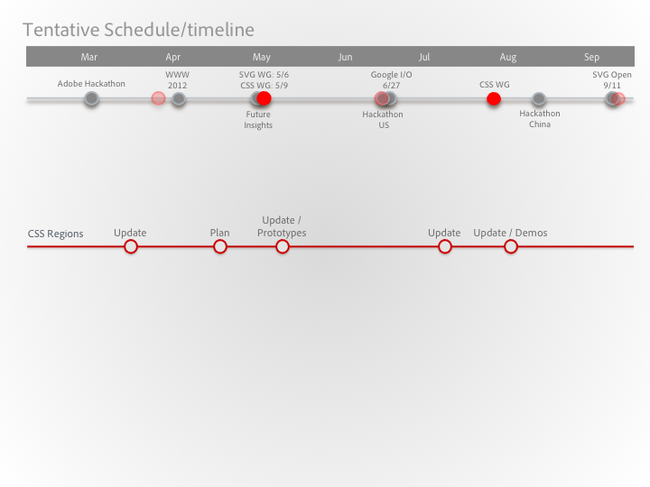

Web Platform Strategy: 2012 (Draft)
Web Platform Leadership Team
Web Platform Mantras
- Make significant contributions to standards bodies and open-source technologies that establish Adobe as a productive player in pushing the web forward
- Communicate our HTML5-related efforts in an intelligent and respectful manner to build credibility as thought leaders with the wider web community
- Pay attention to the progress of the web platform in certain technology spaces where Flash is currently incumbent, to maximize future opportunities
- Act as a beacon within Adobe for any team interested in participating with web standards or contributing to web technologies
Web Platform Strategy
- Thought Leadership vs Point Product Support
- Point product support is a non-goal for Web Platform, apart from WEF-enabled support
- We will aid in establishing connections for products needing involvement with standards, WebKit, etc.
- Driving vs Supporting
- We will achieve a global balance between driving new initiatives and supporting existing ones initiated by others
- Ideally this balance is 50/50
- Finishing vs More ideas
- Finishing feature work establishes commitment
- Broad and responsive involvement establishes leadership
- Introducing features with “bang for the buck” is necessary to maintain leadership
- It’s ok to back away from a feature if we are clear and transparent about why
Web Platform Strategy 2
- Implementation vs Involvement
- High level of active involvement is needed to facilitate implementation success
- Engineering commits will be done as part of feature development in order to satisfy committer/reviewer KPIs
- Involvement activities can be broad. E.g active presence in IRC, lists, hackathons, etc.
- Features vs Non-Features
- We will favor feature work, but will allot capacity for non-feature work
- Ideally we will balance an 80/20 ratio for feature vs non-feature work
- Where to be Involved
- Evangelizing directly to Standards & WebKit community will come from Web Platform
- General evangelizing to broader web dev community will be a joint effort across evangelism and individual product teams, including Web Platform
- General consumer is not a direct focus for the Web Platform team’s outreach activities
2012 KPIs: Goals and Metrics
Community
| KPI/Metric | Major - Web Platform | Major - Evangelists | Other events |
|---|---|---|---|
| YTD Actual | 0 | 0 | 4 |
| 2012 Target | 3 | 3 | 20 |
Web Presence
| KPI/Metric | Blog Hits | ADC Articles |
|---|---|---|
| YTD Actual | 0 | 0 |
| 2012 Target | 5 | 3 |
Web Standards
| KPI/Metric | Standards Hires | W3 Spec Pubs | W3 Blog Posts |
|---|---|---|---|
| YTD Actual | 3 | 0 | 0 |
| 2012 Target | 5 | 6 | 2 |
WebKit Team
| KPI/Metric | WebKit Hires | WebKit Reviewers | WebKit Committers | WebKit Patches |
|---|---|---|---|---|
| YTD Actual | 1 | 0 | 0 | 44 |
| 2012 Target | 8 | 3 | 8 | 300 |
WEF
| KPI/Metric | WEF NPS | WEF Eng Savings |
|---|---|---|
| YTD Actual | 0 | |
| 2012 Target | 50 |
Org Definition / Agendas
- Responsibilities
- Contributing to the Web
- Cross-functional teams (standards, dev, test, design) in Bucharest and US
- 5-person team in Romania (+2 TBH)
- 10-person team in US (+8 TBH) - will become two teams
- Enabling Web Technologies at Adobe (WEF)
- 5-person team in Bucharest (+2 TBH)
- Contributing to the Web
- Methodology
- Scrum. Visible backlog, open reviews.
- 1 week (Web) and 2 week (WEF) sprints
- Management
- Product Management: Deepa
- Program Management: Marc
- Standards: Vincent
- Engineering: Ethan
Target Audience: Community Segments
- What do we care about?
- Who are we targeting?
- What are we enabling people to build?
State of the Web Platform
- Higher Level Trends
- What’s Big This Year
- Apps/site examples that demos the leading edge
Who is building the Web Platform?
| Company | Committers (200 total) | Reviewers (105 total) |
|---|---|---|
| Apple | 27 | 46 |
| 103 | 25 | |
| Nokia | 15 | 9 |
| RIM | 5 | 5 |
| Igalia | 3 | 4 |
| Sencha | 2 | 1 |
| Adobe | 2 | 1 |
- Ryosuke Niwa/ Eric Seidel - build/test infrastructure and automation
- Dave Hyatt (apple) – Layout
Who is building the Web Platform?: W3C
- Many companies are involved in W3C which covers a wide technology area:
- HTML, DOM, CSS, SVG, Web applications, Web and TV, i18n, accessibility, etc...
- In the working group that our team is part of, the key players are:
- CSS Working Group
- Google – Working on all things leading to a better Web application platform. Foundation features (such as CSS Values and Units, CSS Variables, CSS Mixins, CSS Backgrounds and Borders for example)
- Apple – Workking on things that enhance their use of HTML5 in iTunes (such as CSS Animations, CSS Transitions, CSS 2D/3D Transforms, CSS Filter Effects)
- Mozilla / Microsoft – Working on things that are layout related and catching up with some of the advanced WebKit features (animations, 3D).
- Opera – Focused on layout and digital publishing at the moment.
- SVG Working Group
- Google / Apple – Working on interoperability issues between CSS and SVG (e.g., gradients, animations, filters)
- Mozilla – Working on the animation foundation for CSS and SVG (Web animations)
- Canon – Working on making SVG’s rendering model rich enough for print workflows and advanced rendering workflows
- CSS Working Group
Who is involved in building the Web Platform?
- The Whatwg is not strictly speaking a standard committee, more of an alliance. However, it is a realy force in defining the Web platform. In particular, it has a big influence on HTML5 and Web Applications APIs
- There are other key standard bodies that take part in shaping the Web platform, most importantly:
- IETF: transport protocols (e.g., HTTP, WebRTC transport)
- ECMA: ECMAScript / JavaScript
- MPEG: multi-media features (e.g., MPEG, H264, Dash)
- JavaScript frameworks play a key role in shaping the Web platform:
- Jquery
- Modernizr
- YUI
- DoJo
What's happened so far (layout / typography)?
- CSS Regions:
- W3C Working Drafts
- WebKit implementation in progress
- CSS Exclusions
- W3C Working Draft
- WebKit implementation started
- CSS Filters (Shaders)
- W3C proposal. Integration in CSS Filter Working Draft in progress
- WebKit implementation started
- CSS Transforms
- W3C Merged Specification effort
- WebKit implementation started
- CSS Compositing
- Starting work on CSS compositing specification
Where will we focus?
- Tier 1: Enabling Visually Expressive Content
- Layout
- Rendering
- SVG Citizenship
- Animation
- Tier 2: Laying a Foundation for Web App Dev
- CSS Language
- Advanced Rendering
- Component Models
- Asset Management
- JavaScript Concurrency
- Tier 3: Non-Feature Engineering Contributions
- Quality
- Developer Productivity
- Tier 4: Below the “Line”
- Audio/Video
- RT Streaming Media
- Typography
Web Standards/WebKit 2012 "Features"
| Feature | Why? | Involvement Level |
|---|---|---|
| 1. CSS Regions (spec, code, tests) | Thought leadership, finish what started, aligns with expertise | Driver (spect, impl) |
| 2. CSS Exclusions (spec, code, tests) | Thought leadership, finish what started, aligns with expertise | Driver (spect, impl) |
| 3. CSS Shaders (spec, code, tests) | Thought leadership, finish what started, aligns with expertise | Driver (spect, impl) |
| 4. Progress Events (Image only) | finish what started, impactful and immediate win | Driver (spect, impl) |
| 5. CSS Transforms in SVG (spec, code, tests) | finish what started, aligns with expertise | Driver (spect, impl) |
| 6. Compositing (spec, code, tests) | Follow thru on verbal commitment, aligns with expertise | Driver (spect, impl) |
| 7. CSS Variables | Highly visible feature with broad developer impact | Support (specifics TBD) |
| 8. Shadow DOM | Highly visible feature with broad developer impact | Support (specifics TBD) |
| 9. Animation | Area “begging” for thought leadership, aligns with Adobe expertise, possible tooling opportunities | Driver (specifics TBD) |
| 10. WebKit Perf Bots | WebKit eng improvement, tactical collaboration w/ Google | Support |
| 11. WebKit Dynamic Analysis | WebKit eng improvement, tactical collaboration w/ Google | Support |
| 12. WebKit Code Coverage | Thought leadership WebKit engineering improvement | Driver (on us for design, impl, docs, adoption) |
| 13. WebKit Unit Tests | WebKit engineering improvement | Support or Driver |
Web Platform "Heartbeat"
Desktop Goals
- Low barrier to entry for desktop products using web technologies
- WebKit-powered preview or authoring surfaces
- Parsing of CSS, JavaScript, HTML
- Application container with easy integration with the desktop (e.g file system access, drag & drop, menuing, windowing, desktop/dock icon, etc)
- Access to leading-edge Web Technologies
- Low ongoing engineering costs for these applications
Desktop 2012 EARLY Strategy
- Continue to develop an embedded WebKit (or Chromium-based) component that can be used by partially-web-based desktop products (e.g Edge)
- Requirements for leading-edge web features will drive need for component separate from WebKit/Chromium trunk
- This Embedded component is modular
- For web-based desktop products (e.g Brackets), essentially the “webview” component for Phonegap Desktop
- Note: Implies contributions from Web Platform team to PhoneGap Desktop
- Phonegap Desktop Requirements (vis a vis Brackets)
- Embedded WebKit (or Chromium) in the application shell to have cross-platform consistency
- File-system access
- Windowing
- Menuing
- Launch from desktop (including icon on desktop/dock)
- Next Steps
- Catalin/Stefan to re-evaluate architecture and approach in relation to Edge and Brackets requirements
- Build out a prototype
Community Involvement Plan
- Evangelizing to the standards and WebKit community will come from the Web Platform team
- General evangelizing to broader web dev community will be a joint effort across evangelism and individual product teams including Web Platform
- Announcements are timed with major events. Major events trump others.
- Presentations are not limited to what Adobe is working on.
Conference Plan
| Date | Conference | Involvement |
|---|---|---|
| 16-Apr | WWW 2012 | |
| 26-Apr | Front Trends | |
| 6-May | SVG Working Group | |
| 9-May | CSS Working Group | |
| 19-May | Web Afternoon Atlanta | |
| 30-May | @Media | |
| 27-Jun | Google I/O | |
| 2-Aug | WD CNC | |
| 13-Aug | CSS Working Group | |
| 11-Sep | Graphical Web | |
| 20-Oct | MAX | |
| 29-Oct | TPAC | |
| 11?/? | W3Conf |
Adobe Driven Events
| Date | Conference | Involvement |
|---|---|---|
| June | Adobe External Hackathon US | |
| August | Adobe External Hackathon China |
Web and Social Presence
- adobewebplatfrm (Twitter/Facebook/Google+)
- Social media – tweets, links, etc.
- blogs.adobe.com/webplatform
- News, announcements, achievements, etc., posted here
- github.com/adobe/[PROJECT]
- Pre-release binaries, sample code, and docs will be kept here
- adobe.github.com/adobe/[PROJECT]
- Hosted samples for pre-release builds will be kept here
- webplatform.adobe.com
- Hosting of live samples and links to downloads on github
- Individual user blogs and github accounts
- Experiments, explorations, etc., will be posted here
- open@adobe
- Links to any open source projects will be posted here
- “Adobe and HTML” YouTube Channel
- Overviews and Tutorials
Risks
| Risk | Rank | Mitigation Options | Owner | Next Steps |
Topics Under Investigation
- Engineering plan for JavaScript contributions
- Requirement for desktop access to leading-edge Web Technologies
- Engineering velocity